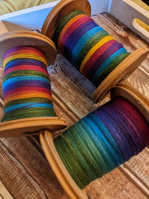
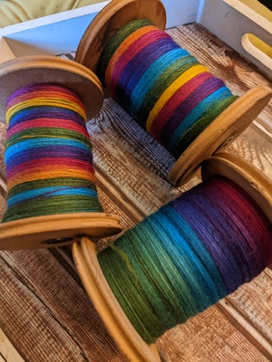

Alongside craft design, I specialise in creating clear, visually engaging photography and video content tailored for the craft and DIY community. From crisp step-by-step photo tutorials to fully edited video guides, my work is designed to educate, inspire, and elevate every project.
With years of experience working with leading UK craft magazines, I understand the importance of clean, consistent visuals that communicate instructions effectively—especially for beginner-friendly patterns. Whether it's styled photography for print or dynamic video content for digital platforms, I handle everything from shooting to editing, ensuring each piece is on-brand, polished, and ready to publish.
If you're looking for high-quality visuals to support your patterns, tutorials, or creative campaigns, I'd love to collaborate. Get in touch to discuss your next project—I offer flexible packages for both editorial and brand work.
 
